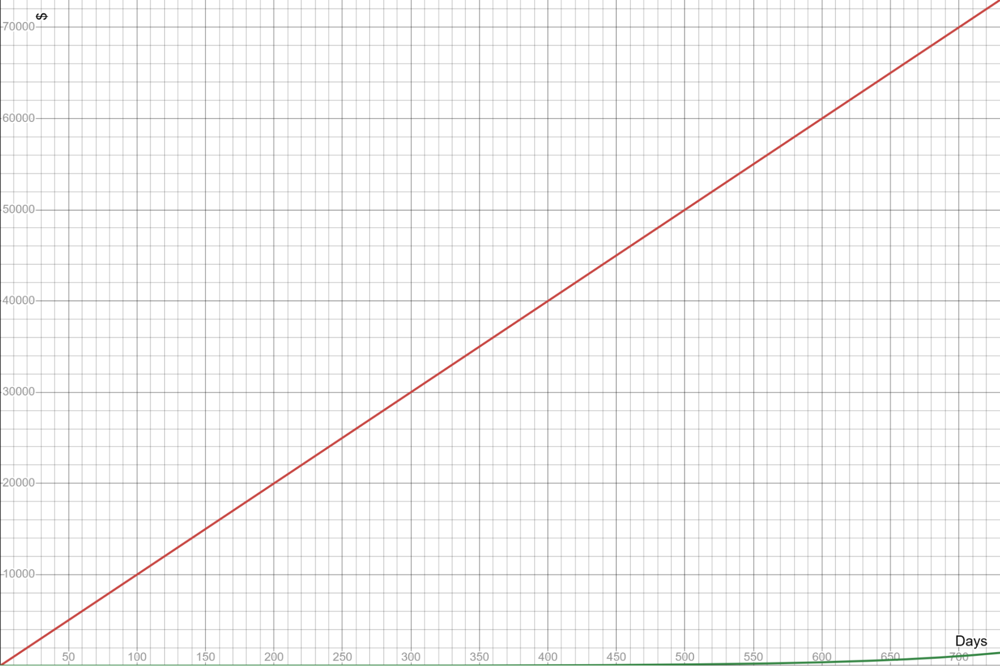

You are already a millionaire (of time) {#you-are-already-a-millionaire-(of-time)}
Let’s look again at the example we tried earlier with the S&P index which historically grows about 10% per year. Let’s use the same $1,000 initial investment to keep things simple.
| Time | Formula | Result |
|---|---|---|
| Stating amount | $1,000 | |
| 1 year | $1,000 * 1.11 | $1,100 |
| 2 years | $1,000 * 1.12 | $1,210 |
| 5 years | $1,000 * 1.15 | $1,610 |
| 10 years | $1,000 * 1.110 | $2,594 |
| 25 years | $1,000 * 1.125 | $10,835 |
If you chart this out, you’ll see that the S&P 500 graph has the same hockey stick shape as the rich uncle graph from earlier– gradual growth at first, then it accelerates and accelerates, driving exponentially upward, each year much more powerful than the previous year.
 But what would happen if we delay that investment by just 5 years? Maybe we really want to get that new game console. Maybe the market is looking shaky right now. Maybe we want to take some time to wait until we feel confident taking the plunge to tie up our money in the stock market.
Let’s game that out. Let’s hold on to that $1,000 and invest it 5 years from now. In other words, let’s let it grow for 20 years instead of 25.
It should be no big deal, right? Shaving 5 years off our 25 year investment time reduces our time in the market by only 20%. We saw that our $1,000 grew an extra $10,000 over 25 years, So if we’re leaving the money in there for 80% of that time, we should see 80% of that growth– $8,000 on top of our $1,000. Sure, it’s not 10x like before, but 8x is still pretty good, right?
Let’s model it out and see what this looks like. To make things simple, I’ll start it from year 5. The red line shows the value of what you would have had if you’d invested 5 years earlier, and the blue shows what you would have if you waited 5 years.
Ouch.
Our $1,000 over 25 years reached almost $11,000. But if we delay our investment by just 5 years, we finish with only about $6,700. We invested the same $1,000 in both scenarios. But the decision to delay our long-term investment by only 5 years cost us $4,300 or 43% of the growth we would have had if we’d started 5 years earlier.
Uh-oh, we were thinking linearly again!
You might think, “well I’m investing for retirement, I’m thinking 50 years down the road, not 25! 5 years is a big chunk of 25 years, but surely it’s just a drop in the bucket 50 years from now!”
You might think that. But you’d be wrong.
The 5-year delayed investment would certainly perform well. 45 years of growth at 10% would turn your $1,000 into $72,890. An almost 73x increase, nice! But if we had invested from the start and gotten the full 50 years of growth, it would have been $117,390– a mind-boggling 118x increase! At a 50 year time horizon, the 5 year delay will have cost you $44,500– still a whopping 38% of what you could have had, and more than half of what you actually have now.
What do we learn from this?
TIME IS YOUR MOST VALUABLE RESOURCE.
Every year, every month, every day you delay putting a dollar to work decreases the future earning power of that dollar. If $1 invested today has the potential to become $100 by the time you retire, that’s exciting! But it also means that last year it probably had the potential to become $120. And next year, it will only have the potential to be $80. Thus the adage: “The best time to invest was yesterday which means the second best time is today.”
Your Wealth Multiplier
What a great idea– that each of your dollars has a different potential growth factor depending on how long it has left in the market. The great folks at the Money Guy have given this growth factor idea a name. They call it the Wealth Multiplier.
You could come up with a simple formula yourself using the equations we covered earlier. If you assume you invest in the S&P 500, earning 10% annually, you can run this equation:
Wealth Multiplier = 1.1years until retirement
So if you’re 30 and you plan to retire at 65, your wealth multiplier is 1.135, which is about 28. You can expect every dollar you invest today to grow to about $28 by the time you retire.
But that’s not realistic. You’re not going to want to stay invested solely in the high-growth but highly volatile S&P 500 your whole life[^1]– you’re going to want to gradually start trading higher returns for higher stability as you get closer to retirement age.
So the folks at the Money Guy Show put together a more realistic (but also more complicated) formula that assumes a 10% rate of return 45+ years out from retirement, decreasing by 0.1% per year until retirement, compounded monthly. It’s too complex to put into a memorable formula, so I won’t bother writing it here, but how the number changes as you age:
Here’s how the wealth multiplier works out over time, assuming a target retirement age of 65. Again, linear thinking will sabotage you; notice how quickly the number falls off a cliff as you age.

I’m currently 35, so My wealth multiplier is 12.69. I can reasonably expect that any money I have in the market (or put into the market) today will grow to 12.69x its current value by the time I turn 65.
What was my wealth multiplier at 30? It was about 23. When I was 25, that number was 44. when I was 20, it was an astounding 88!
Which leads to my unpleasant confession…
My multi-million dollar mistake
This is where my regret comes and kicks me in the teeth. In the introduction, I said my wife and I did all the hard work of saving and budgeting, but didn’t do the easy work. Here’s what I mean.
Where did we put all the money we worked so hard to save? In a savings account, of course (isn’t that what it’s for?). I had no idea how the financial world of investment worked. The little I’d heard from news articles and blog posts scared me. I knew that investing entailed “risk–†a word that sounded like gambling in my mind. I heard investing was complicated, and people were constantly disagreeing on how to do it, and many offered “advice†that was dangerous or actually a sales pitch for their product. And I heard there were a bunch of tax rules that could ruin you if you didn’t know exactly what you were doing.
I was terrified of falling for some bad investment or making a tax mistake so year after year, I procrastinated doing the work to learn how this whole “investing†thing works. I kept all that money on the sidelines while my wealth multiplier dropped from 88… to 44… to 23… etc. I didn’t learn about the wealth multiplier until mine had dropped all the way to 18.
Once I learned about the power of compound interest and the wealth multiplier, I flushed my cash into the market as quickly as I dared… but the damage was already done. If I had been pumping the money I saved into investments instead of just savings accounts during my 20s, that money would have grown to several million dollars by the time I retire.
I’m still working to pump extra in to try and accelerate my growth, and we’ll do okay in the end. But if we had just nudged the direction of our existing effort a few degrees, we could have retired very early and taken our foot off the savings pedal way earlier. But it’s impossible to buy back that lost time. That’s why I want you to start now.